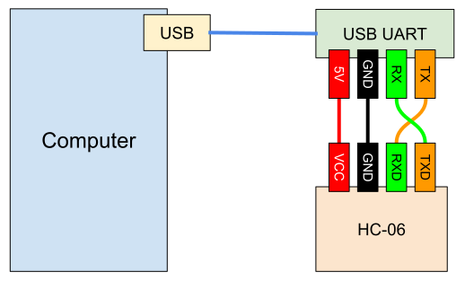

A configuration program for the DSD TECH HC-06 Bluetooth module.
To configure your device it must be connected (via a wired serial port) to the computer running this browser. Bluetooth must be disconnected.
Note: The HC-06 may be Bluetooth paired with a device, just not connected.
The HC-06 does not support querying parameters. Because of this this application will remember the values of the last device to which it connected.
The default BAUD rate is 9600. If you cannot connect, try connecting first at 9600, and then at other speeds.